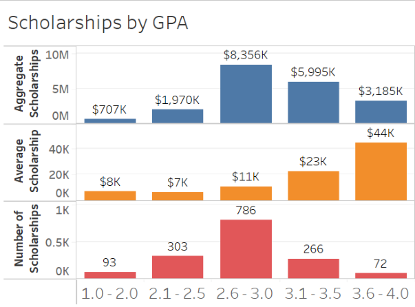
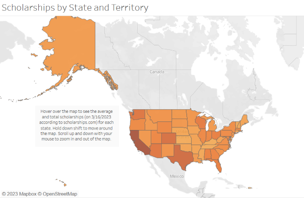
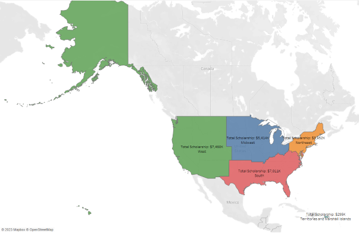

SCHOLARSHIPS.COM Scholarship Analysis
Rising student debt is a topic that is always in the news. I have come across data detailing the demograhics of the student debt borrowers, but I have not seen a great deal of information detailing the demographics of scholarships available to borrowers. Scholarships are one of many factors which can help alleviate the financial pressures associated with pursuing a higher education. These visualizations help explain how different factors such as GPA, state of residence, and prospective major can influence the number of scholarships and the value of the scholarships a student would be eligible for. I intend for these dashboards to be living documents which will update as new data points and scholarships become available through web scraping. I hope that these visualizations can help prospective students better understand how different factors affect the availability of scholarships.

Extracting Scholarship Data
I selected SCHOLARSHIPS.com as my data source for this analysis since it is the largest college scholarship search engine and has a comprehensize scholarship directory which is straightforward to scrape from. The scholarships included in the analysis are only available in the United States and the Marshall Islands. Due to a potential expanded scope of the analysis, I scrapped all of the available scholarships within the Scholarship Directory on SCHOLARSHIPS.com. My analysis was focused specifically on the GPA, Athletic Ability, State of Residence, ACT, and SAT tables within SCHOLARHSIP.com's Scholarship Directory. To generate the dataset I built a crawling web scraper in Python using Scrapy to extract current scholarships listed on the Scholarship Directory on 3/16/2023. I throttled the scraping to reduce the stress on SCHOLARSHIP.com's servers and mitigate the prospect of my IP address becoming blocked. Please feel free to take a look at the scraper here. Please feel free to take a look at the scraped files here.
Transforming Scholarship Data
After exporting the scrapped data to a CSV file, I also used Excel to remove rows which contained scholarships that had an amount of 'Varies'. I also removed Null or duplicated (based on scholarship name) data. The data was cleansed to standardize capitalization across the dataset. Once the data was cleaned I used the SplitToColumns feature of Excel separate the scholarship URL so the scholarship name was in separate column.
Analysis
GPA
Going into my analysis I expected more scholarships to be available for those with higher GPAs. I found the average scholarship amount in the 3.6 to 4.0 GPA range to be approximately 4 times greater than the average scholarship amount in the 2.6 to 3.0 range. However, the number of scholarships for the latter GPA range are approximately 10 times greater than the former GPA range. 
State of Residence
As indicated by the darker shading of the graph below, the total value of scholarships is higher in the western half (particularly the southwest) of the United States. Going into my analysis, I was expecting a higher concentration in the northeast given the higher population density in the region.

I subsequently broke up the map according to the United States Census group and found that the total scholarships ($7,460k) in the west is 88.8% greater than total scholarships in the northeast ($3,952k).

Field of Study
As expected, STEM majors have a higher total scholarship amount than other majors. Majors which contain the word 'engineering' have aggregate scholarship amounts BLANK percent greater than majors that do not contain the word 'engineering'. Take a look at this SQL query here.
Please click on the following link to see the dashboards and worksheets.